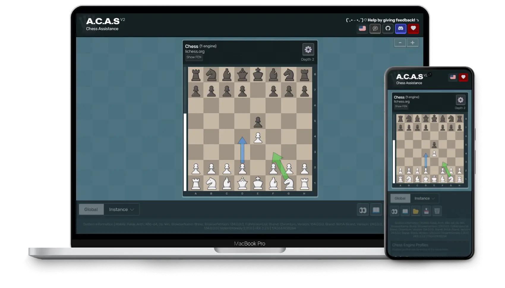

Chess Assistance
Open source & free, for you~💖

40 000+
Installs2000
Daily Uses>80%
Positive Reviews100+
Stars
A.C.A.S (Advanced Chess Assistance System) is an open-source chess assistant (not a chess cheat), designed to help you make better moves using a chess engine. Just install the userscript, open the A.C.A.S GUI, and you're ready to go—no downloads necessary!
- Completely free and open source! (Licensed with GPLv3 💖)
- No anti-features on userscript (e.g. ads and tracking)
- WebAssembly chess engine (faster than regular JavaScript engines)
- Supports the most popular chess game sites (e.g. chess.com, lichess.org)
- Supports multiple move suggestions, move arrow markings, chess variants & fonts
- Translated to 30+ languages
| ▶️ Open A.C.A.S | ⬇️ Install (GreasyFork) | ⬇️ Download (Direct) | 💬 Discuss With Community |
|---|
Please be advised that the use of A.C.A.S may violate the rules and lead to disqualification or banning from tournaments and online platforms. The developers of A.C.A.S and related systems will NOT be held accountable for any consequences resulting from its use. We strongly advise to use A.C.A.S only in a controlled environment ethically.
Beyond Move Suggestions.
Our goal is to build chess software that benefits everyone. We aim to support new players by offering features that enhance learning and deepen understanding of the game.
Customize it.
We’ve made it so you’re in charge, giving you full control over your experience. Whether you’re a newbie or a chess pro, it’s all about playing your way.
Okay, so what’s the deal?
No payments, no complex software installations. Just a real-time chess tool that actually helps you play better. That’s A.C.A.S baby. Whether you’re grinding puzzles, playing bullet, or trying to hit 2000 ELO, A.C.A.S gives you smart overlays right on the board. It’s light and fast, some could even call it stable, but we'll let you decide that one. Remember, no guarantees!
Just install it, keep the window open, and you’ll start learning as you play. Works on basically anything with a modern browser, even your phone. Everything runs locally, no cloud stuff. A.C.A.S is amazing.
Ready to begin? (˶˘ ³˘Install